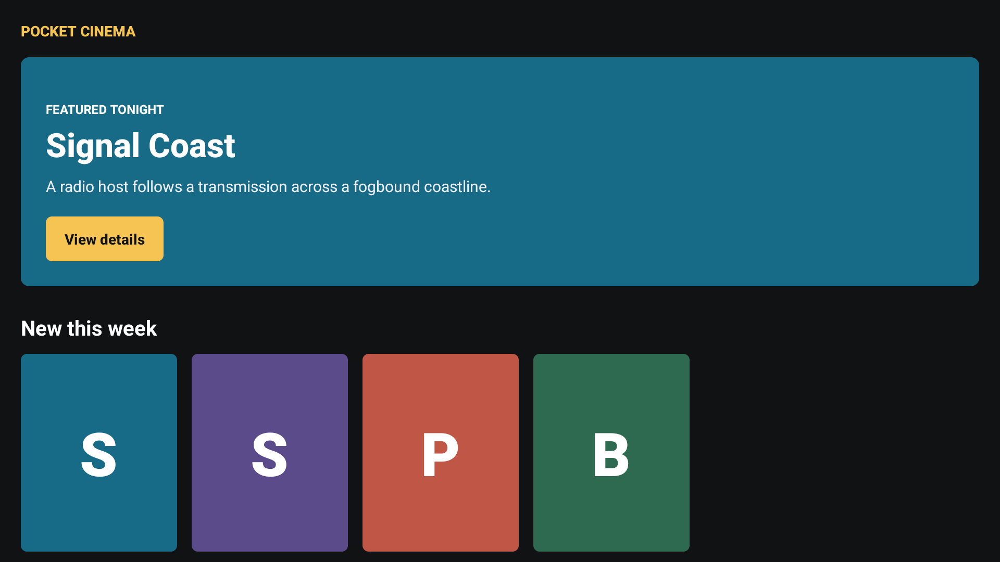

A four-hour workshop · React Native to Vega OS
PAST THE
VIBES
Build and test an agent harness with Strands Agents SDK.
Giovanni
Laquidara
Kourtney
Meiss
Introduction · the workshop goal
A large language model can reason about a task.
An AI agent harness is the
software infrastructure around it.
The harness turns passive reasoning into controlled action. Its main parts are tools, an isolated execution environment, and context management.
Introduction · the main rule
plausible
≠ verified
A model generates plausible text. Plausible text can be wrong.
Each phase must end with an independent check.
Introduction · the security boundary
The model proposes.
The harness controls changes.
Model: read-only
- Lists, reads, and searches the guarded app.
- Returns a typed patch:
{summary, files}.
- Has no shell or write tool.
Harness: controls effects
- Writes files, runs checks, and retries.
- Applies token and turn limits and commits passed work.
- Records evidence, hashes, and reports.
The model proposes. The harness decides. This boundary does not change.
Introduction · the complete system
One controlled loop has six phases
ADBT MCPthe model reads Vega workflows
→
Strands agentread-only tools and a typed patch
→
Harnesswrite → check → retry → commit
→
Evidencehashes, commits, checks, and reports
analyze → plan → port → build → launch → test
// The last three phases run a compiler, a device, and a focus contract.
Introduction · the practical sequence
Each lesson follows
the same practical sequence.
1 purpose what the phase must do
2 harness code the important TypeScript
3 run the command to execute
4 expect the normal output
5 inspect the files and transcript
6 prove the independent evidence

Pocket Cinema is the product input. The workshop changes its React Native app from mobile behavior to a controlled TV flow.
Evidence · claim → independent check
When the model reports completion,
find the independent check.
CLAIM INDEPENDENT OBSERVER
“the port is correct” → static + executable checks
“it builds” → Vega compiler + .vpkg
“it runs” → two state samples + crash log
“the remote works” → observed focus IDs + approved plan
Each lesson adds one row. Each row states the remaining limit. No single check proves all behavior.
Lesson 1 · analyze the app
First, run one model call.
It returns a plausible patch.
$ workshop-harness naive apps/pocket-cinema
23 proposed files 0 applied · 0 checks · 0 builds · 0 device turns
$ workshop-harness run apps/pocket-cinema --phases analyze
✓ guarded write · check · commit · transcript
The patch can be correct. The response does not prove it. The first phase adds a guarded write and a check.
Lesson 2 · plan the TV port
Define and approve TV behavior
before code changes.
Plan inputs
- The guarded app and ANALYSIS.md.
- The product rules in workshop-brief.md.
- Current Vega documents from ADBT MCP.
Approval boundary
- The schema checks screens, focus, Select, and Back.
- The run ends in awaiting_approval.
- Later phases require matching plan and brief hashes.
Review port-plan.json. Then run approve-plan. A changed plan or brief makes the approval stale.
Architecture · the agent runtime
Strands Agents SDK
runs the model and tool loop
Strands supplies
- The configured model and provider.
- Zod-typed tools and structured output.
- The model loop and MCP clients.
The harness supplies
- Writes, Git, phase order, and checks.
- Selected project tools for each phase.
- Usage records and stop conditions.
The attendee selects a supported model in workshop.config.json. The model can propose files. The harness keeps control of effects.
Strands Agents SDK · open-source agent toolkit
Create an agent, give it typed tools,
and connect it to the selected model.
Architecture · the knowledge source
ADBT supplies current
Vega documents through MCP
Knowledge through MCP
- ADBT runs locally as an MCP server.
- The model searches and reads Vega documents.
- The harness does not contain a Vega scaffold.
Recorded provenance
- The run records each document name and excerpt.
- The harness stores a SHA-256 hash for each read.
- A phase fails when required ADBT use is missing.
ADBT owns Vega knowledge. The phase prompt tells the model when to use that knowledge.
Lesson 3 · write the port
A retry must include
new failure information.
✗ TV flow documented: VEGA_PORT.md must contain "## TV Flow"
→ that exact text joins attempt 2 …
✓ ten checks pass → one commit
The exact failure identifies the unmet requirement. The phase stops when checks pass, the budget ends, or the failure reaches the retry limit.
Lesson 4 · build until it compiles
Now the check is a compiler
$ inject-build-failure workshop # guarded copy only
✗ src/workshop-build-break.ts(2,14): error TS2322:
Type 'number' is not assignable to type 'string'.
→ exact diagnostic to the model → repair → complete build
✓ fresh index.hermes.bundle + installable .vpkg
The phase verifies first. It calls the model only after a failed build. A successful command must also produce both required build artifacts.
Lesson 5 · run it on the device
A successful start command
does not prove continued operation.
install .vpkg → start app
✓ running-state sample 1
wait five seconds → scan device log for crash signatures
✓ running-state sample 2
The harness starts or reuses the VDA. The command returns only after the dwell, crash scan, and second process check pass.
Lesson 6 · test the remote
Inject a key.
Read the focused test ID.
inputd-cli sends Down, Left, Right, Select, and Back
getPageSource returns the VDA user-interface hierarchy
focused: true + test_id gives the observed control
approved plan ID === observed test_id
Automation Toolkit supplies each observation. The harness compares it with the approved plan without model judgment.
Lesson 2 · approval protects later phases
awaiting_approval
is the expected plan result.
port-plan.json → plan SHA-256
workshop-brief.md → brief SHA-256
approve-plan → port-plan-approval.json
port · build · launch · test → require both matching hashes
Review focus, Select, Back, preserved behavior, and deferred behavior. If either input changes, approve the plan again.
Appendix A1 · 40-minute Bee challenge
Use a Bee conversation
as private product input.
Consent and privacy
- Get explicit consent.
- Keep conversation data out of Git.
- Store source IDs and hashes, not transcript text.
Approval and scope
- Bee CLI supplies the conversation through MCP.
- The model proposes a bounded specification.
- A person reviews it before source changes.
A conversation can contain a request. It is not approval to change the application.
Appendix A1 · same engine, different plan
Change the phase plan.
Reuse the controlled engine.
bee_spec → review → bee_apply → build → launch
bee_spec Bee MCP → validated JSON → rendered BEE_SPEC.md
review person checks scope, sources, exclusions, and checks
bee_apply implements approved requests in the guarded app
The approved specification files are read-only during bee_apply. Specification checks can use only file_exists and contains.
Lesson 7 · control the complete run
The TUI shows
the complete pipeline state.
executor strands evidence live seed workshop-v1
tokens 1,082,772 / unlimited turns 71 calls 4
✓ feasibility ✓ analyze ✓ plan ✓ port ● build ○ launch ○ test
checks: compiler failed → diagnostic retained → repair passed
commit: 8f2c4d1 workshop(build): produce Vega package
Move between views
- Up or Down selects a phase.
- Enter opens its messages.
- Escape returns. Tab changes the filter.
Read usage correctly
- There is no fixed dollar limit.
- The token limit can be unlimited.
- Provider cost appears only when reported.
Lesson 7 · TUI and team exercise
TV is the example.
The pattern applies to other domains.
plan → context → run → check → retry → commit → report
Inspect feasibility and all six phases in the TUI. Then design a three-phase harness. Ask another person to find a false positive. Improve one check.
Fork the repository. Change the phase plan, context source, or executor.
Build evidence.
Do not trust vibes.
github.com/giolaq/past-the-vibes-we
Use narrow model authority, independent checks, and review gates in your domain. Giovanni Laquidara · Kourtney Meiss